The Portal is the Rhino's record keeper and judge. It runs on the host at port 5000 and keeps what Klipper doesn't: the tools you add, system hardware, maintenance, backups, slice profiles and updates. Every change is checked against your whole Klipper config before it is written. Rhino Studio is where you use it: Assets for tools, hardware, pins and parts, Care for maintenance and Settings for backups and updates (Part 4). The Portal's own pages at http://rhino.local:5000 still work, as a fallback.
This chapter covers what the Portal does behind those screens: the steps of adding a tool, which are the same in Studio, the restart rule, and slicing on the Rhino. The pictures are from the Portal's own pages.
Press + Add a tool. The wizard's steps depend on the kind of tool: powered tools get all seven, passive tools get a Connector step instead of Outputs and Limits, print-head clones get Hardware. Every kind gets Controls and Macros.
Step 1 · Tool – say whether the tool is Additive (adds material: print heads, paste or glue dispensers), Subtractive (removes or cuts material: lasers, spindles, hot wires, knives) or Passive (pens, probes, cameras, holders). Then pick the kind of tool within it, type a name and optional notes. The kind fills in safe starting values; the list of kinds is yours to edit under Admin › Tool lists. The name is what G-code and slicers use: 2–24 letters, digits or _, starting with a letter.
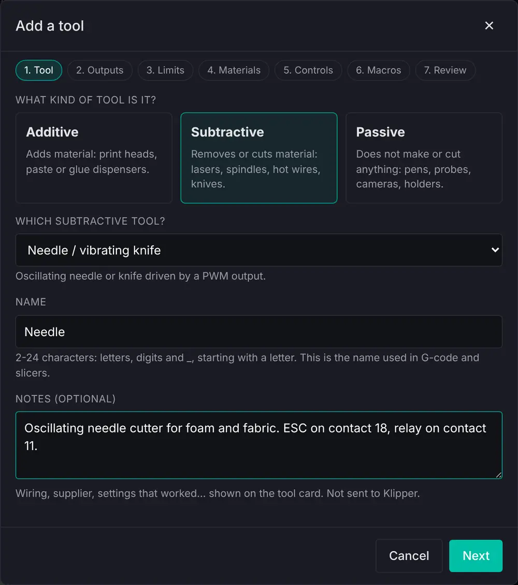
Mistakes are caught before you move on, with the rule spelled out:
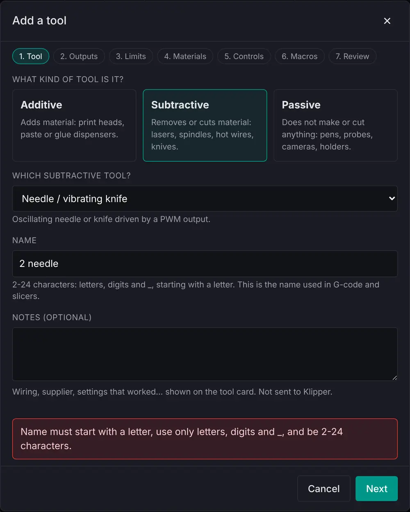
Step 2 · Outputs – one row per output the tool needs. Most tools have a main power feed and a signal or two, so press + Add an output for each. Every row has a job and a source:
M3 S sets, scaled and capped. Exactly one per tool.The source is a contact of the umbilical that a Klipper output already drives (contact 18, the spindle ESC signal, for example), a new output on a spare pin, a piece of system hardware, or another output in the config. Below the outputs, tick the other contacts the tool uses – returns, supplies, the probe – so its pin map is complete. Contacts its outputs drive are ticked for you.
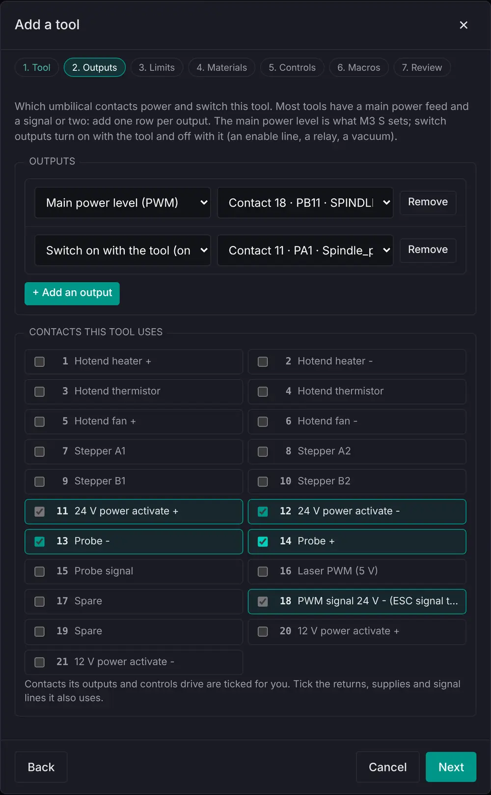
Step 3 · Limits – the power cap (a hard ceiling whatever the G-code asks), minimum and idle levels, the watchdog's maximum on-time, and the S value that means full power. Sharing the ESC channel sets the idle level to its neutral 30%.
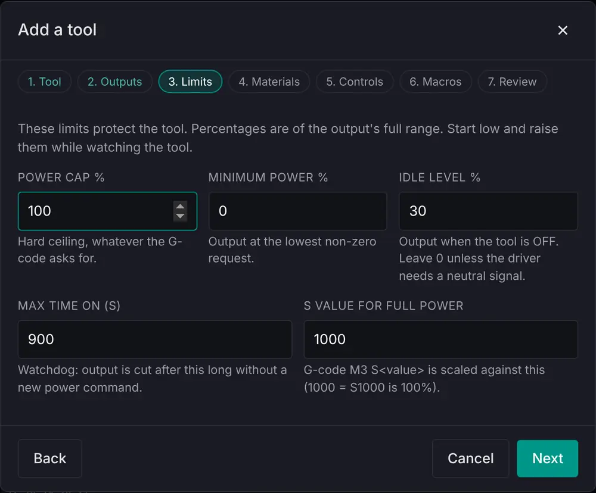
Step 4 · Materials – the presets you pick when starting a job (power, feed, Z offset), and the pre-job checklist shown before every job with this tool. The material name box suggests the names listed under Admin › Tool lists.
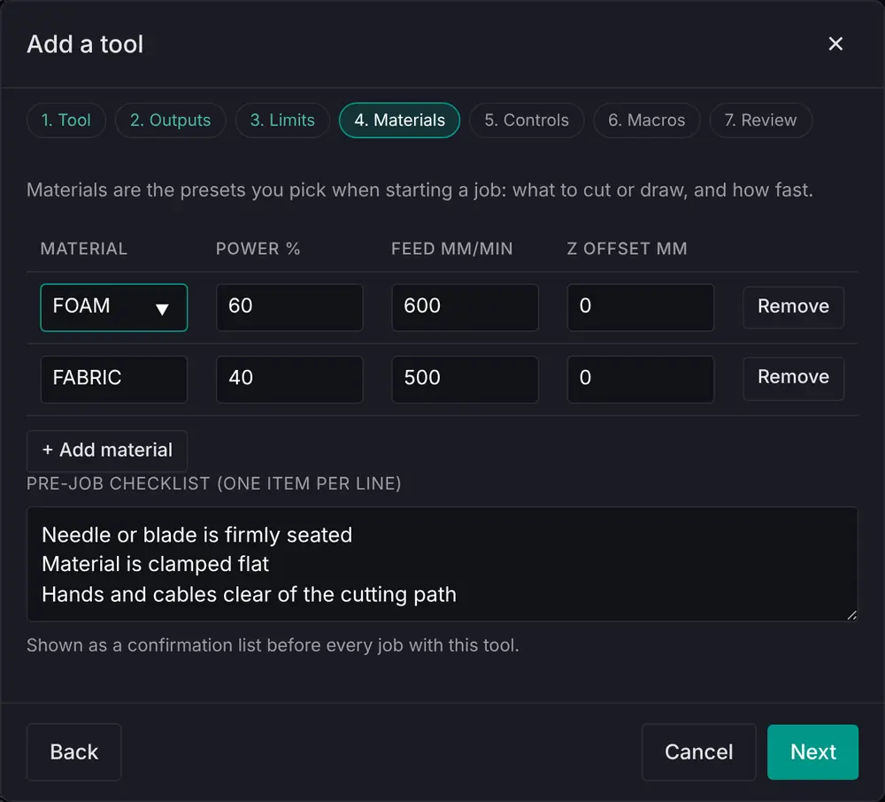
Step 5 · Controls – extra outputs and inputs the tool brings that are not simply switched with it: a fan with its own speed, a servo, a lid switch. Press + Add a control and answer the guide's questions: you describe what the control does, and the portal works out which Klipper section that needs and shows the exact text it will write.
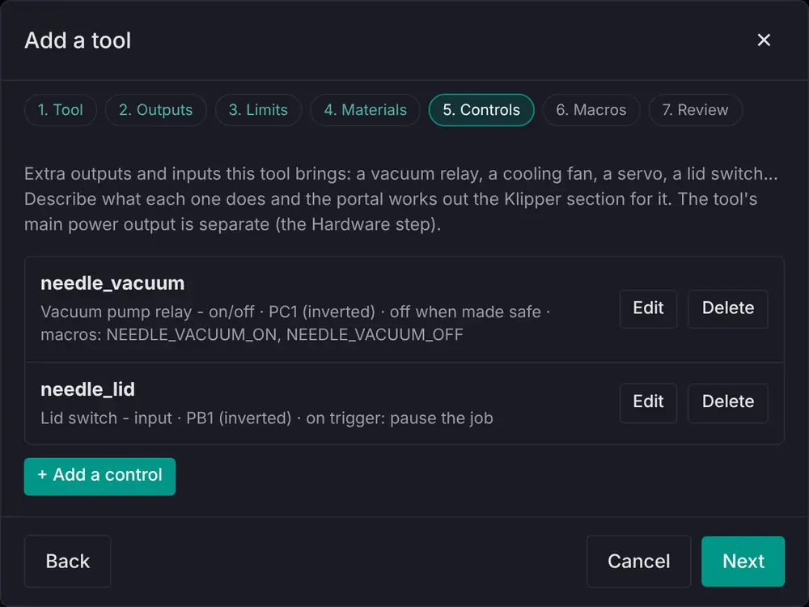
The control guide asks, in order:
_, such as needle_vacuum. G-code uses the name (SET_PIN PIN=needle_vacuum), so it must not match anything else in your config.| You pick | Klipper section | Typical use |
|---|---|---|
| Switch it on and off | output_pin | Relay, solenoid, vacuum pump, light, valve |
| Set a level | output_pin, pwm: True | Driver board, LED dimmer, small heater |
| Run it like a fan | fan_generic | Fan or blower set by speed, with a kick-start |
| Run it while a heater is hot | heater_fan | Hotend or heat-break cooling |
| Move it to an angle | servo | Gate, pen lift, deflector |
| The tool sends a signal | gcode_button | Lid switch, limit switch, foot pedal, sensor |
myrhino/umbilical.json says what each pin is ("type": "logic" or "type": "mosfet"), pins that cannot do the job are greyed out.EMERGENCY_STOP; ticked by default); switch it off or leave it on if Klipper shuts down; and make NAME_ON / NAME_OFF (or NAME_SET, NAME_ANGLE) macros, optionally only while this tool is mounted.The top of the guide: name, direction, what it does and the pin.
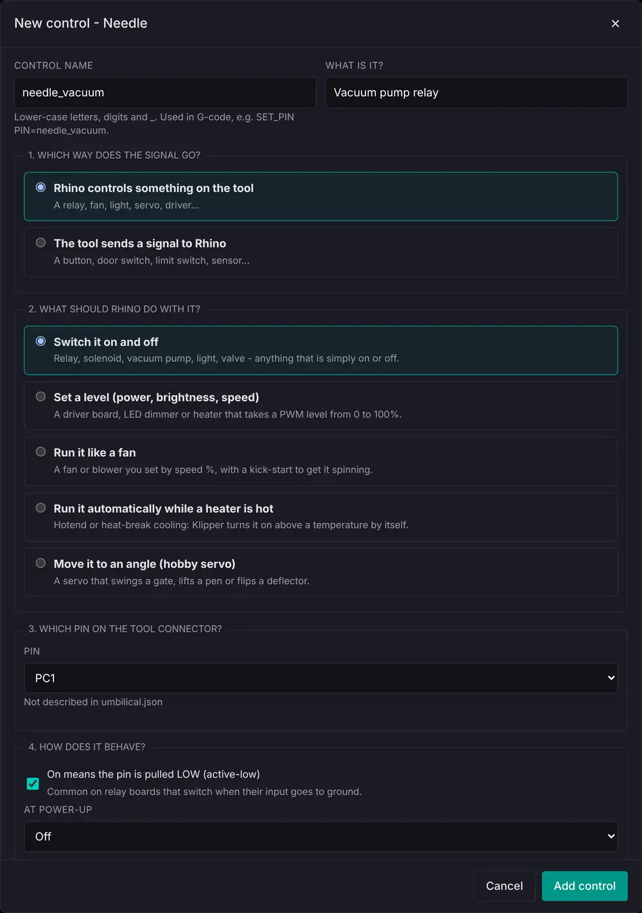
The bottom of the guide: safety options, the macros it makes, and the exact text written to custom_tools.cfg. Add control saves only a valid entry; a name already in use, a taken pin or two controls on one pin are refused, with the reason in the preview box.
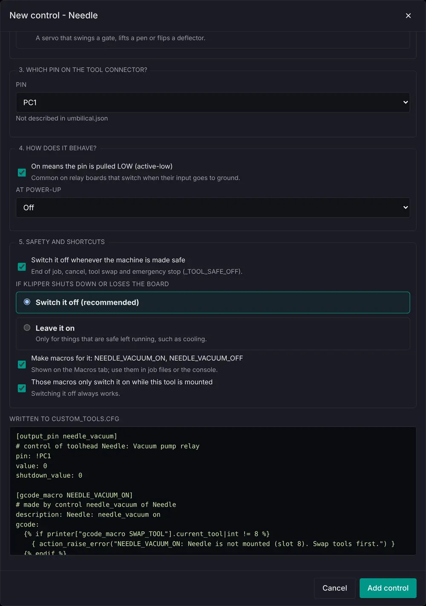
For a signal from the tool, the guide asks how it is wired. A switch to ground turns on the pin's pull-up; a sensor that drives the line needs none. Then it asks what happens when the signal triggers and when it is released: show a message, pause the job (only while one is running), emergency stop, or run a command or macro.
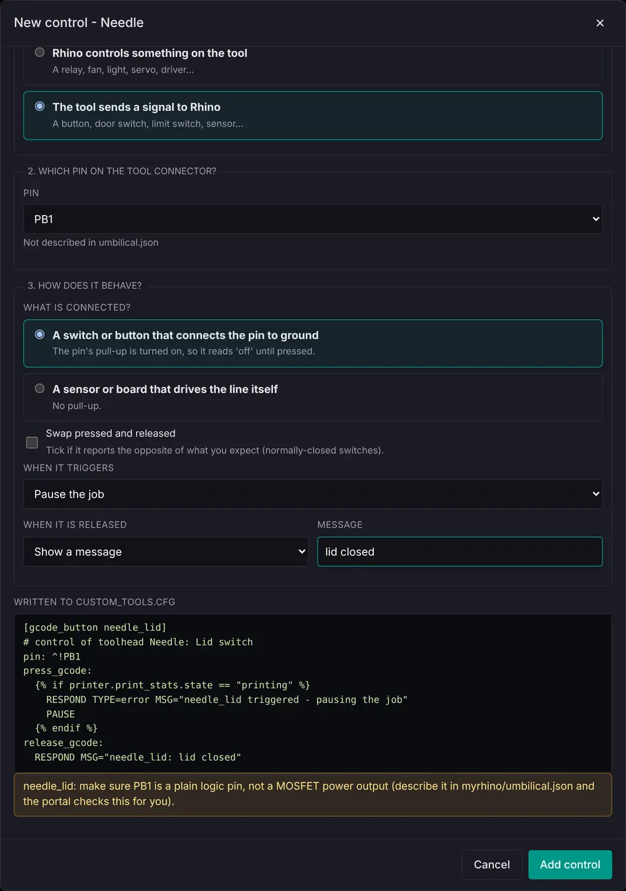
Step 6 · Macros – G-code macros that belong to this tool: a test cut, a purge, a park move. They are written to custom_tools.cfg with the tool and removed with it. Macros your controls made are listed underneath.
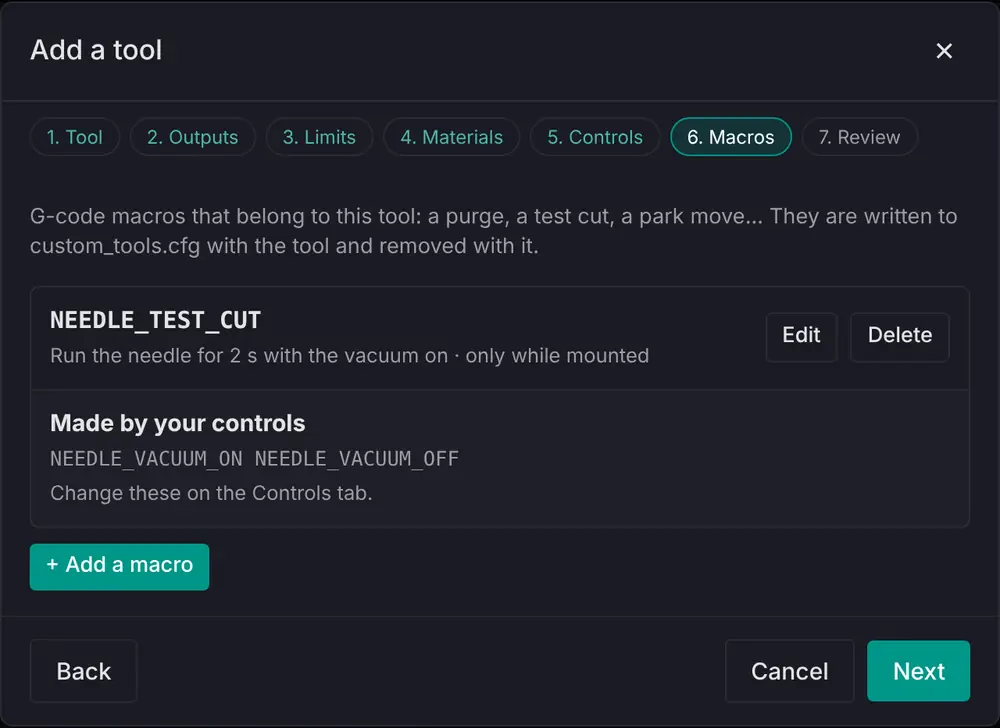
Press + Add a macro. Macro name: letters, digits and _, saved in capitals because Klipper ignores letter case. Purpose: one line, shown in the macro lists. Only run when this tool is mounted: with another tool on the machine the macro refuses with a message. Macro: Klipper G-code and Jinja exactly as in a [gcode_macro]. The box underneath shows exactly what will be written.
Refused: a name used by any macro or Klipper command (SET_PIN, SWAP_TOOL, PAUSE), G-code words such as M3, and template errors such as a missing {% endif %}. Warned: SAVE_CONFIG, FIRMWARE_RESTART or M112 in the body, an unrecognised command (usually a typo), and text after # or ;, which Klipper drops as a comment.
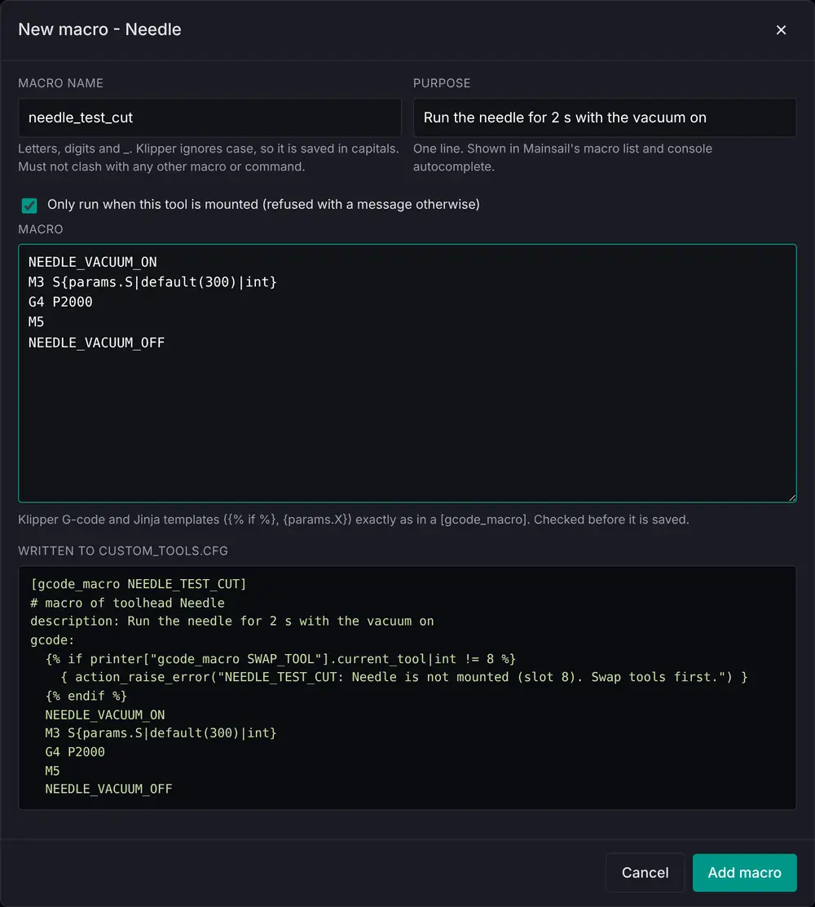
Step 7 · Review – the portal checks everything against your live Klipper config, warns about shared outputs, and tells you the slot the tool will get. Add up to six photos here, then Create tool.
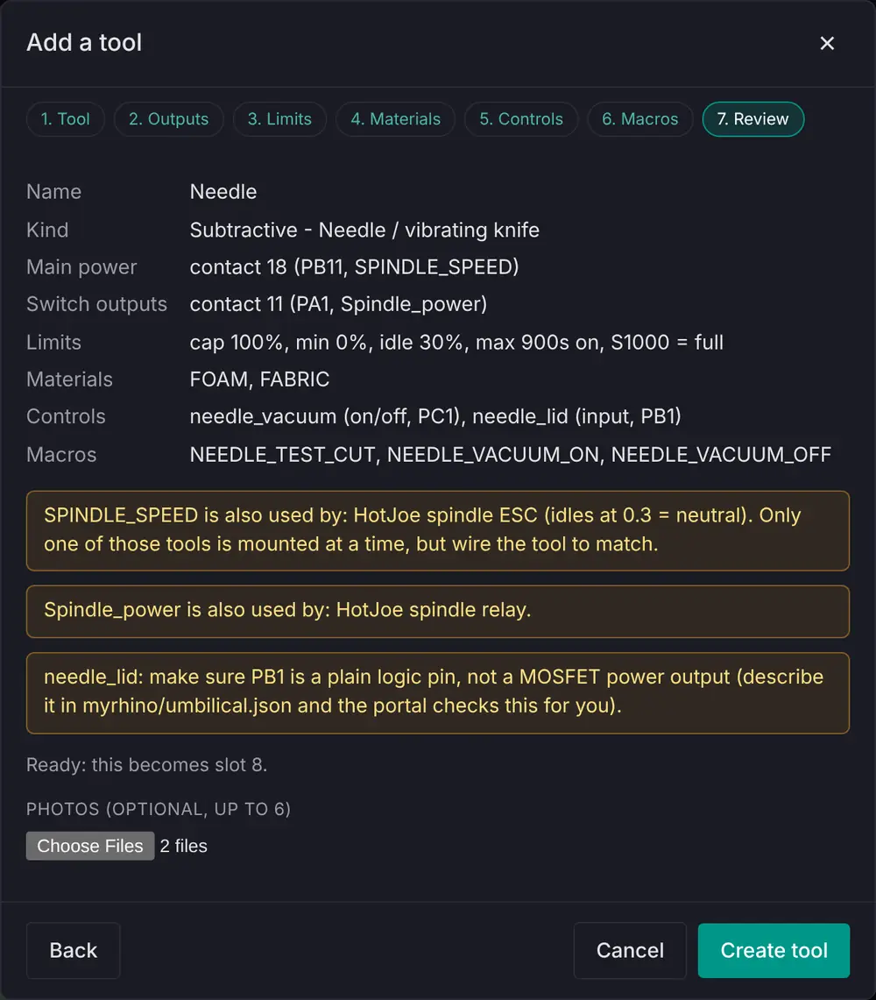
Press Add maintenance tasks on the confirmation and the portal offers the Task Book that fits the new tool (see Task Library and Task Books in Part 5).
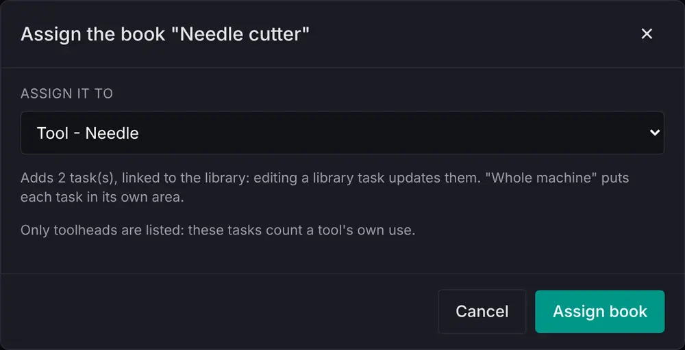
A new or changed tool is saved immediately but is not live until Klipper restarts. A yellow banner lists what is waiting, from the portal or the console; press Restart Klipper when the machine is idle. Changes Klipper never sees – notes, photos, the pin map – are saved without asking for a restart.
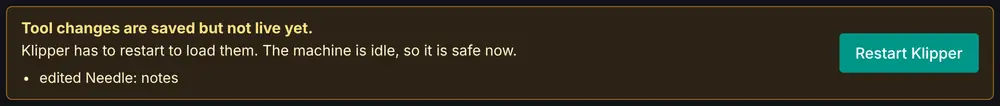
While a job is printing or paused, Restart Klipper is greyed out and the banner says why, with the file name, a progress bar, time elapsed and time left, and the clock time when a restart becomes possible. Changes made during a job are saved and queued; only the restart waits, so it can never kill a job.
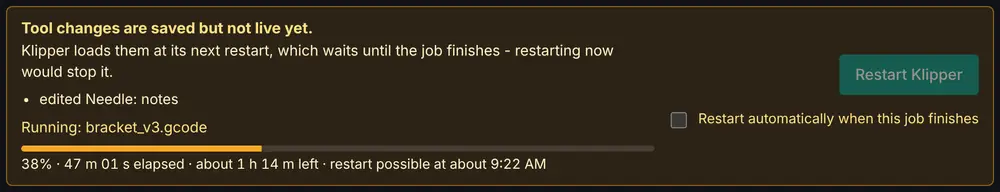
Restart automatically when this job finishes is off by default. Tick it and the portal restarts Klipper 30 seconds after the job completes or is cancelled, which leaves time for END_PRINT or CANCEL_PRINT to finish. After an error it does not restart, so you can see what happened. A restart started anywhere else (Studio, Mainsail, RESTART_FOR_TOOLS) also clears the banner. The console commands (ADD_TOOLHEAD and the rest) stay refused during a job: they run a shell command that Klipper waits for, which would stall the job's G-code.
The portal can run PrusaSlicer on the Rhino for Rhino Studio's Prepare, so a phone or tablet can slice a 3D model without a PC. Prusa ships its Linux build only through Flathub, so the host needs Flatpak once: over SSH, sudo apt install flatpak (the portal never runs sudo itself). Then install PrusaSlicer from Rhino Studio, Settings › Software: it goes in for your login only (flatpak --user) and slices a test cube before it is used. The same row offers Update when Flathub has a newer build; if a new build can't slice, the one before is put back, and Go back does the same by hand. It needs a host with 2 GB of memory or more: on a Pi 3B, slice with Kiri:Moto in Studio instead.
Each slice runs in Flatpak's sandbox, with no network and no files but its own. Slicing always gives way to the printer: it runs at the lowest priority, one slice at a time, with fewer cores and less memory while a job prints. A host under 4 GB (a 2 GB board, or a Pi 3B with an engine put there by hand) waits until the job is finished. Whatever settings Studio sends, the Rhino's start and end G-code, temperatures, bed and nozzle are always its own. PrusaSlicer is © Prusa Research and the Slic3r authors, under the AGPL-3.0 licence, and is downloaded from Flathub on the machine.
Change a tool you added on its page in Assets (Edit), which opens the same steps with its answers filled in. Deleting it frees its pins, removes its photos and archives its maintenance tasks; restart Klipper afterwards. Built-in tools live in variables.cfg and are read-only.